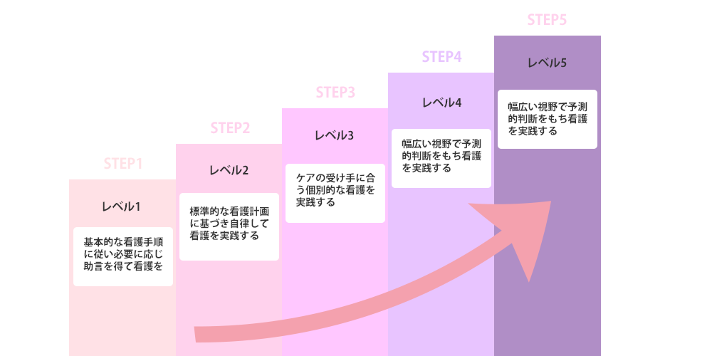

成長の軌跡を次へ繋ぐ経験
当院は、継続的な教育体制とキャリアアップの重要性を強調し、看護師の成長と満足度を促進します。専門的な研修やキャリアプランニングの支援を通じて、看護師が自己成長を実現し、医療サービスの質を向上させるお手伝いをいたします。
新人教育プログラム
新人看護師のための充実した教育プログラムをご導入しています。実務に必要な知識や技術を習得し、安心して業務に取り組めるよう、研修カリキュラムを構築。専門のトレーナーによる実践的な指導やメンターシッププログラムを通じて、新人看護師が成長できる環境を提供しています。
PNS(パートナー・シップ・ナーシング)
PNSを通じて、看護師同士や他職種との協力関係を強化し、より効果的なチーム医療を実現します。コミュニケーション能力やチームワークを育成し、患者中心のケアを提供するための基盤を築きます。PNSの理念を理解し、看護師個々の成長と組織の発展を支援します。
中途採用支援
個別のキャリアニーズや志向に合わせた求人情報を提供し、円滑な採用プロセスをサポートします。希望する職場環境やキャリアパスを実現するお手伝いをします。さらに、入職後も定期的なフォローアップやキャリア相談を行い、中途採用者の定着と成長を支援します。
その他の教育支援
院外研修
外部機関と連携し、最新の医療知識や技術を習得できる院外研修プログラムを提供。看護師のスキルアップを支援し、高品質な医療サービスの提供を目指します。
eラーニング
柔軟で効果的な学習を可能にするeラーニングプログラムを提供。オンライン上での学習コンテンツやテストを通じて、看護師のスキル向上と知識の更新を支援します。
クリニカルラダー
看護師のキャリアパスを明確化し、成長を促進するクリニカルラダープログラムを導入。看護師が自己実現を目指す道筋を示します。各段階で求められる業務内容や資格取得の情報を提供し、個々の目標設定やスキルアップをサポートします。また、看護師が自己評価を行いながら成長できる環境を構築します。
認定看護師による研修
認定看護師が提供する専門的な研修プログラムを導入。臨床ケースの解説やシミュレーション演習を通じて、実践的なスキルを磨きます。また、認定看護師の研修を通じて、実務での疑問や課題に対するアドバイスを受けることができます。看護師の専門性を高め、質の高い医療サービスの提供に貢献します。
在籍人数
| がん看護専門看護師 | 1名 |
|---|---|
| 感染管理認定看護師 | 1名 |
| 皮膚排泄ケア認定看護師 | 1名 |
| がん化学療法看護認定看護師 | 1名 |
| 糖尿病看護認定看護師 | 1名 |